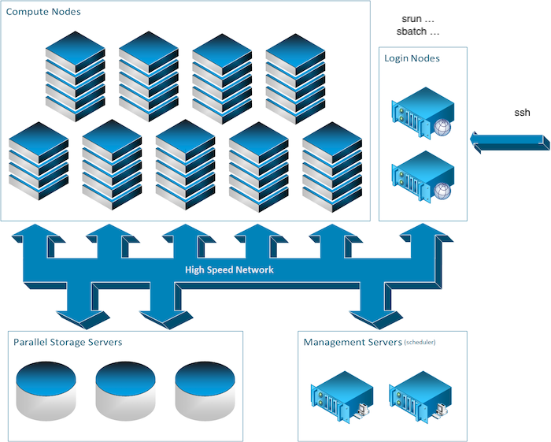

What is a computer cluster?¶
A computer cluster is a set of loosely or tightly connected computers that work together so that, in many respects, they can be viewed as a single system.
Parts of a computing cluster¶
To provide high performance computation capabilities, clusters can combine hundreds to thousands of computers, called nodes, which are all inter-connected with a high-performance communication network. Most nodes are designed for high-performance computations, but clusters can also use specialized nodes to offer parallel file systems, databases, login nodes and even the cluster scheduling functionality as pictured in the image below.
We will overview the different types of nodes which you can encounter on a typical cluster.
The login nodes¶
To execute computing processes on a cluster, you must first connect to a cluster and this is accomplished through a login node. These so-called login nodes are the entry point to most clusters.
Another entry point to some clusters such as the Mila cluster is the JupyterHub web interface, but we’ll read about that later. For now let’s return to the subject of this section; Login nodes. To connect to these, you would typically use a remote shell connection. The most usual tool to do so is SSH. You’ll hear and read a lot about this tool. Imagine it as a very long (and somewhat magical) extension cord which connects the computer you are using now, such as your laptop, to a remote computer’s terminal shell. You might already know what a terminal shell is if you ever used the command line.
The compute nodes¶
In the field of artificial intelligence, you will usually be on the hunt for GPUs. In most clusters, the compute nodes are the ones with GPU capacity.
While there is a general paradigm to tend towards a homogeneous configuration for nodes, this is not always possible in the field of artificial intelligence as the hardware evolve rapidly as is being complemented by new hardware and so on. Hence, you will often read about computational node classes. Some of which might have different GPU models or even no GPU at all. For the Mila cluster you will find this information in the Node profile description section. For now, you should note that is important to keep in mind that you should be aware of which nodes your code is running on. More on that later.
The storage nodes¶
Some computers on a cluster function to only store and serve files. While the name of these computers might matter to some, as a user, you’ll only be concerned about the path to the data. More on that in the Processing data section.
Different nodes for different uses¶
It is important to note here the difference in intended uses between the compute nodes and the login nodes. While the compute nodes are meant for heavy computation, the login nodes are not.
The login nodes however are used by everyone who uses the cluster and care must be taken not to overburden these nodes. Consequently, only very short and light processes should be run on these otherwise the cluster may become inaccessible. In other words, please refrain from executing long or compute intensive processes on login nodes because it affects all other users. In some cases, you will also find that doing so might get you into trouble.
UNIX¶
All clusters typically run on GNU/Linux distributions. Hence a minimum knowledge of GNU/Linux and BASH is usually required to use them. See the following tutorial for a rough guide on getting started with Linux.
The workload manager¶
On a cluster, users don’t have direct access to the compute nodes but instead connect to a login node and add jobs to the workload manager queue. Whenever there are resources available to execute these jobs they will be allocated to a compute node and run, which can be immediately or after a wait of up to several days.
A job is comprised of a number of steps that will run one after the other. This is done so that you can schedule a sequence of processes that can use the results of the previous steps without having to manually interact with the scheduler.
Each step can have any number of tasks which are groups of processes that can be scheduled independently on the cluster but can run in parallel if there are resources available. The distinction between steps and tasks is that multiple tasks, if they are part of the same step, cannot depend on results of other tasks because there are no guarantees on the order in which they will be executed.
Finally each process group is the basic unit that is scheduled in the cluster. It comprises of a set of processes (or threads) that can run on a number of resources (CPU, GPU, RAM, …) and are scheduled together as a unit on one or more machines.
Each of these concepts lends itself to a particular use. For multi-gpu training in AI workloads you would use one task per GPU for data paralellism or one process group if you are doing model parallelism. Hyperparameter optimisation can be done using a combination of tasks and steps but is probably better left to a framework outside of the scope of the workload manager.
If this all seems complicated, you should know that all these things do not need to always be used. It is perfectly acceptable to sumbit jobs with a single step, a single task and a single process.
The available resources on the cluster are not infinite and it is the workload manager’s job to allocate them. Whenever a job request comes in and there are not enough resources available to start it immediately, it will go in the queue.
Once a job is in the queue, it will stay there until another job finishes and then the workload manager will try to use the newly freed resources with jobs from the queue. The exact order in which the jobs will start is not fixed, because it depends on the local policies which can take into account the user priority, the time since the job was requested, the amount of resources requested and possibly other things. There should be a tool that comes with the manager where you can see the status of your queued jobs and why they remain in the queue.
The workload manager will divide the cluster into partitions according to the configuration set by the admins. A partition is a set of machines typically reserved for a particular purpose. An example might be CPU-only machines for preprocessing setup as a separate partition. It is possible for multiple partitions to share resources.
There will always be at least one partition that is the default partition in which jobs without a specific request will go. Other partitions can be requested, but might be restricted to a group of users, depending on policy.
Partitions are useful for a policy standpoint to ensure efficient use of the cluster resources and avoid using up too much of one resource type blocking use of another. They are also useful for heterogenous clusters where different hardware is mixed in and not all software is compatible with all of it (for example x86 and POWER cpus).
To ensure a fair share of the computing resources for all, the workload manager establishes limits on the amount of resources that a single user can use at once. These can be hard limits which prevent running jobs when you go over or soft limits which will let you run jobs, but only until some other job needs the resources.
Admin policy will determine what those exact limits are for a particular cluster or user and whether they are hard or soft limits.
The way soft limits are enforced is using preemption, which means that when another job with higher priority needs the resources that your job is using, your job will receive a signal that it needs to save its state and exit. It will be given a certain amount of time to do this (the grace period, which may be 0s) and then forcefully terminated if it is still running.
Depending on the workload manager in use and the cluster configuration a job that is preempted like this may be automatically rescheduled to have a chance to finish or it may be up to the job to reschedule itself.
The other limit you can encounter with a job that goes over its declared limits. When you schedule a job, you declare how much resources it will need (RAM, CPUs, GPUs, …). Some of those may have default values and not be explicitely defined. For certain types of devices, like GPUs, access to units over your job limit is made unavailable. For others, like RAM, usage is monitored and your job will be terminated if it goes too much over. This makes it important to ensure you estimate resource usage accurately.
Slurm client commands are available on the login nodes for you to submit jobs to the main controller and add your job to the queue. Jobs are of 2 types: batch jobs and interactive jobs.
For practical examples of Slurm commands on the Mila cluster, see Running your code.
Processing data¶
For processing large amounts of data common for deep learning, either for dataset preprocessing or training, several techniques exist. Each has typical uses and limitations.
Data parallelism¶
The first technique is called data parallelism (aka task parallelism in formal computer science). You simply run lots of processes each handling a portion of the data you want to process. This is by far the easiest technique to use and should be favored whenever possible. A common example of this is hyperparameter optimisation.
For really small computations the time to setup multiple processes might be longer than the processing time and lead to waste. This can be addressed by bunching up some of the processes together by doing sequential processing of sub-partitions of the data.
For the cluster systems it is also inadvisable to launch thousands of jobs and even if each job would run for a reasonable amount of time (several minutes at minimum), it would be best to make larger groups until the amount of jobs is in the low hundreds at most.
Finally another thing to keep in mind is that the transfer bandwidth is limited between the filesystems (see Filesystem concerns) and the compute nodes and if you run too many jobs using too much data at once they may end up not being any faster because they will spend their time waiting for data to arrive.
Model parallelism¶
The second technique is called model parallelism (which doesn’t have a single equivalent in formal computer science). It is used mostly when a single instance of a model will not fit in a computing resource (such as the GPU memory being too small for all the parameters).
In this case, the model is split into its constituent parts, each processed independently and their intermediate results communicated with each other to arrive at a final result.
This is generally harder but necessary to work with larger, more powerful models like GPT.
Communication concerns¶
The main difference of these two approaches is the need for communication between the multiple processes. Some common training methods, like stochastic gradient descent sit somewhere between the two, because they require some communication, but not a lot. Most people classify it as data parallelism since it sits closer to that end.
In general for data parallelism tasks or tasks that communicate infrequently it doesn’t make a lot of difference where the processes sit because the communication bandwidth and latency will not have a lot of impact on the time it takes to complete the job. The individual tasks can generally be scheduled independently.
On the contrary for model parallelism you need to pay more attention to where your tasks are. In this case it is usually required to use the facilities of the workload manager to group the tasks so that they are on the same machine or machines that are closely linked to ensure optimal communication. What is the best allocation depends on the specific cluster architecture available and the technologies it support (such as InfiniBand, RDMA, NVLink or others)
Filesystem concerns¶
When working on a cluster, you will generally encounter several different filesystems. Usually there will be names such as ‘home’, ‘scratch’, ‘datasets’, ‘projects’, ‘tmp’.
The reason for having different filesystems available instead of a single giant one is to provide for different use cases. For example, the ‘datasets’ filesystem would be optimized for fast reads but have slow write performance. This is because datasets are usually written once and then read very often for training.
Different filesystems have different performance levels. For instance, backed
up filesystems (such as $PROJECT in Digital Research Alliance of Canada
clusters) provide more space and can handle large files but cannot sustain
highly parallel accesses typically required for high speed model training.
The set of filesystems provided by the cluster you are using should be detailed in the documentation for that cluster and the names can differ from those above. You should pay attention to their recommended use case in the documentation and use the appropriate filesystem for the appropriate job. There are cases where a job ran hundreds of times slower because it tried to use a filesystem that wasn’t a good fit for the job.
One last thing to pay attention to is the data retention policy for the filesystems. This has two subpoints: how long is the data kept for, and are there backups.
Some filesystems will have a limit on how long they keep their files. Typically the limit is some number of days (like 90 days) but can also be ‘as long as the job runs’ for some.
As for backups, some filesystems will not have a limit for data, but will also not have backups. For those it is important to maintain a copy of any crucial data somewhere else. The data will not be purposefully deleted, but the filesystem may fail and lose all or part of its data. If you have any data that is crucial for a paper or your thesis keep an additional copy of it somewhere else.
Software on the cluster¶
This section aims to raise awareness to problems one can encounter when trying to run a software on different computers and how this is dealt with on typical computation clusters.
The Mila cluster and the Digital Research Alliance of Canada clusters both provide various useful software and computing environments, which can be activated through the module system. Alternatively, you may build containers with your desired software and run them on compute nodes.
Regarding Python development, we recommend using virtual environments to install Python packages in isolation.
Cluster software modules¶
Modules are small files which modify your environment variables to point to
specific versions of various software and libraries. For instance, a module
might provide the python command to point to Python 3.7, another might
activate CUDA version 11.0, another might provide the torch package, and so
on.
For more information, see The module command.
Containers¶
Containers are a special form of isolation of software and its dependencies. A container is essentially a lightweight virtual machine: it encapsulates a virtual file system for a full OS installation, as well as a separate network and execution environment.
For example, you can create an Ubuntu container in which you install various
packages using apt, modify settings as you would as a root user, and so on,
but without interfering with your main installation. Once built, a container can
be run on any compatible system.
For more information, see Using containers.
Python Virtual environments¶
A virtual environment in Python is a local, isolated environment in which you can install or uninstall Python packages without interfering with the global environment (or other virtual environments). In order to use a virtual environment, you first have to activate it.
For more information, see Virtual environments.